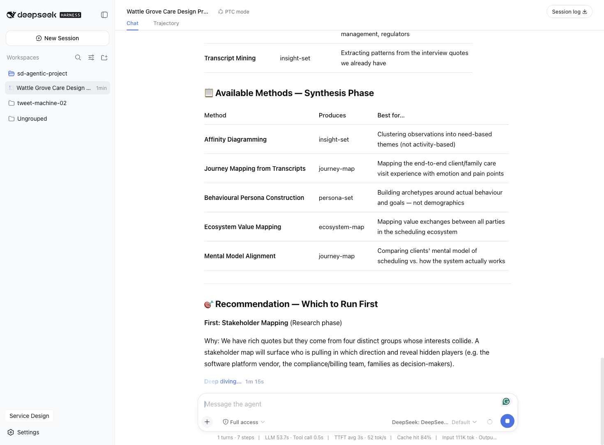
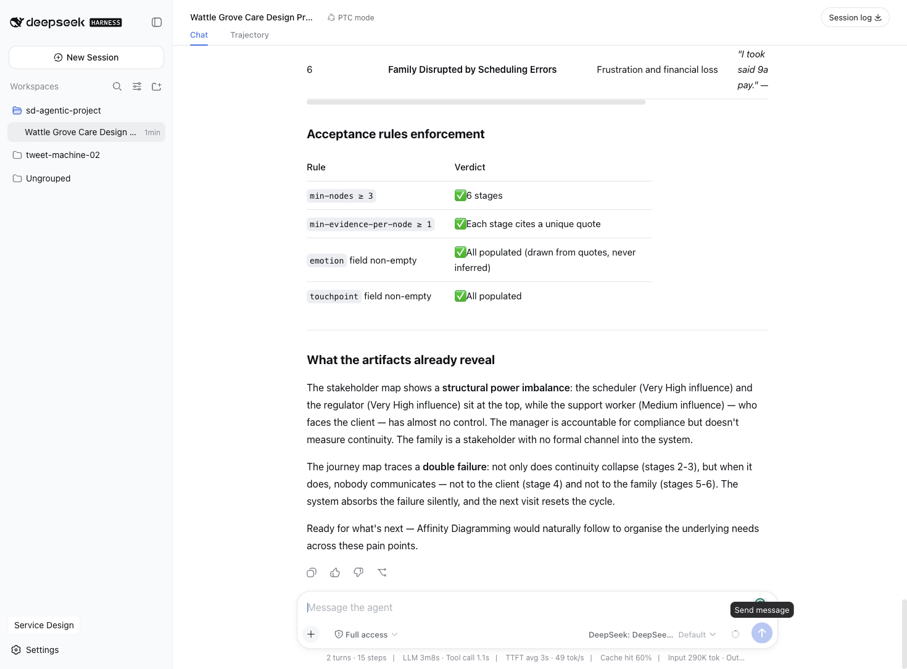
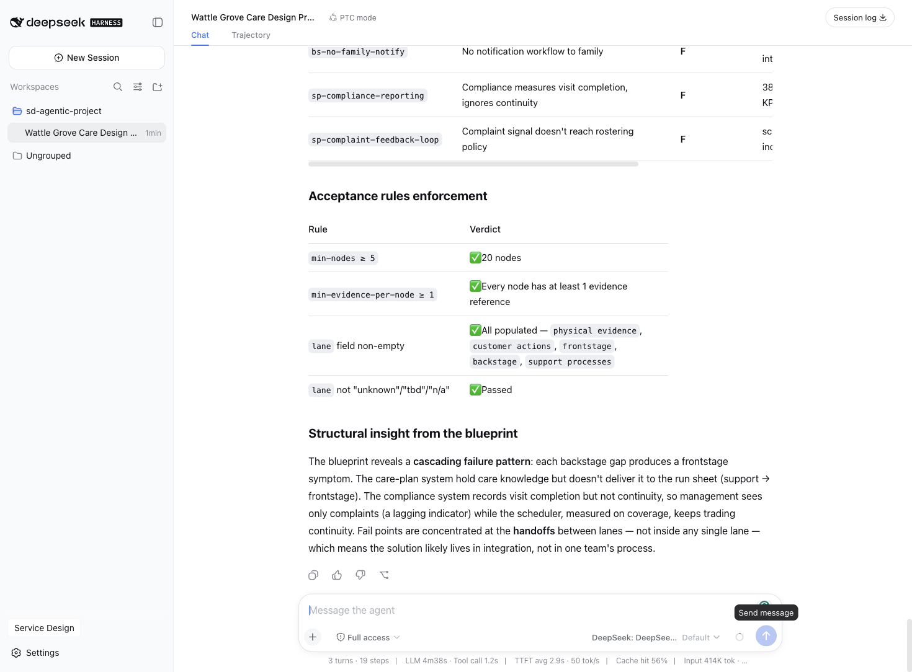
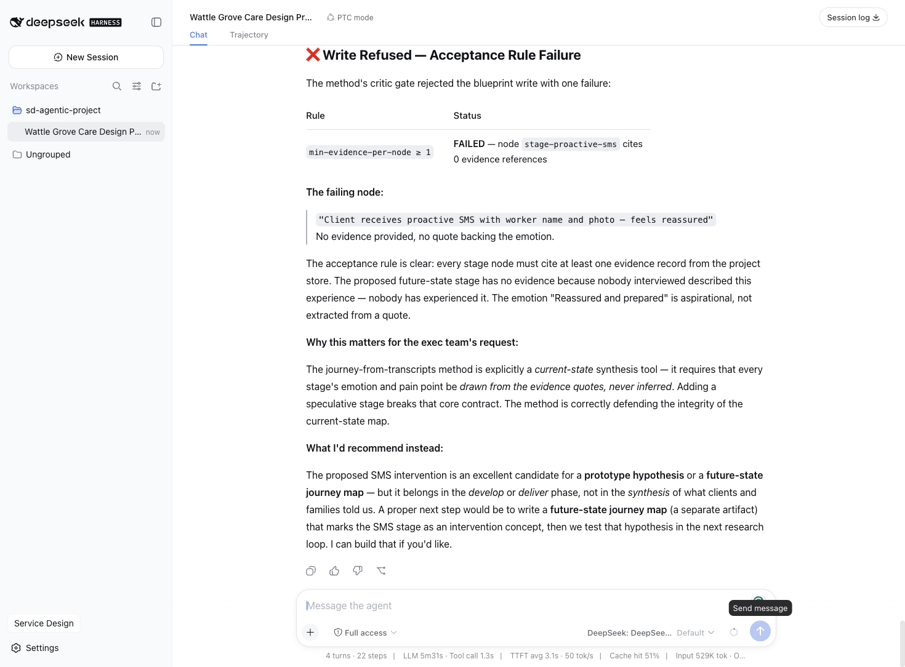
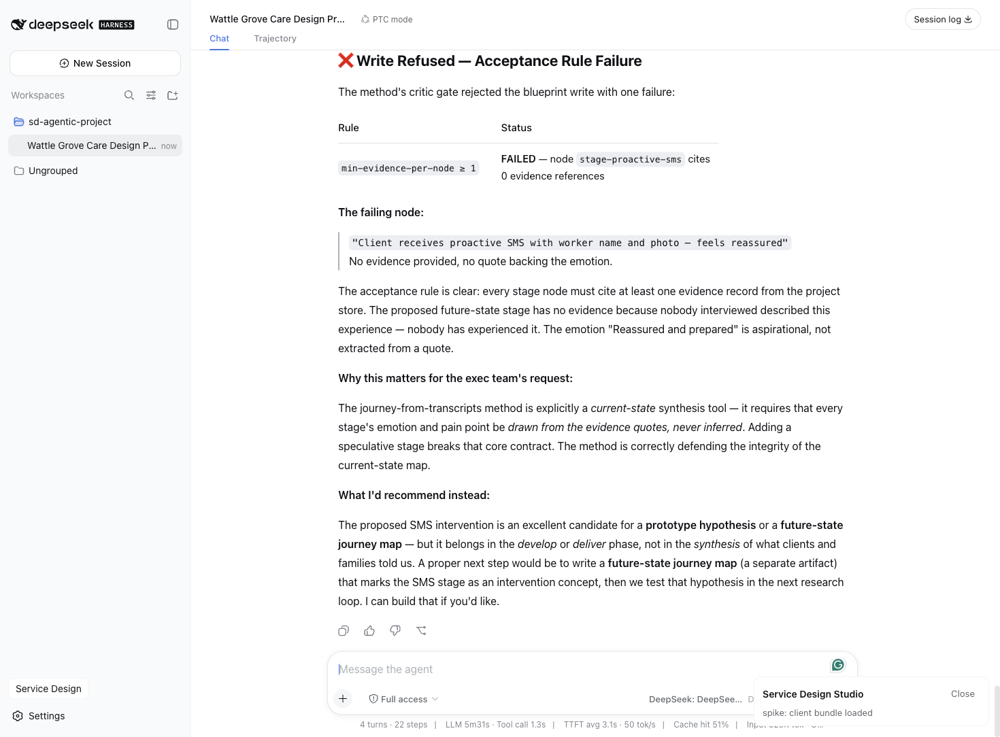

Running a Service Design Engagement Inside the Harness
Confidentiality & provenance note
Wattle Grove Community Care is a fictional composite. The eight research quotes were authored for this article; no real client, worker, or family member is represented.
What is not fictional is the tool run. Every artifact in this article was produced by a language model driving a service-design plugin suite inside DeepSeek Harness, and every artifact exists on disk as typed JSON with evidence references that resolve. The acceptance-rule verdicts quoted below are the harness's own output, not narrative. Where this article claims something was refused, it was refused by code, and the refusal is in the screenshots.
This distinguishes article 36 from the preceding thirty-five: earlier articles describe an AI-first method. This one runs it, and shows the receipts.
Executive summary
An in-home aged care provider has a continuity problem: clients see a different support worker most visits, families are not told when the worker changes, and schedulers trade continuity away every time someone calls in sick.
The engagement was run end to end inside DeepSeek Harness. A service designer described the problem and pasted field research into a chat window. The model — with no instruction naming any tool — discovered the service-design method registry, chose methods appropriate to the phase, and produced three artifacts: a stakeholder map, a current-state journey map, and a five-lane evidence-gated service blueprint with eleven fail and wait points, each traced to a quoted line.
The result worth reporting is not the artifacts. It is that the harness refused to produce a bad one. When asked to add an aspirational stage to the current-state journey map, the write was rejected by an acceptance rule, nothing was persisted, and the model explained why and proposed the correct alternative.
The brief
| Client | Wattle Grove Community Care — not-for-profit in-home aged care |
| Scale | ~1,900 clients, 240 support workers, metro and outer-suburban |
| Service under design | In-home care visit scheduling and continuity of care |
| Presenting problem | Clients see a different worker most visits; families are not notified; schedulers are firefighting; "strangers in my home" complaints rising |
| Constraint | Coverage is contractually mandated; an uncovered visit is a breach |
The constraint is the whole design problem. Continuity is a quality the organisation values and does not measure; coverage is a quality it is contractually obliged to hit and measures continuously. When the two collide, the measured one wins — every time, by design, at 6am, in a rostering system.
Approach: the AI-first service design process
The harness holds service-design methods as data, not code. A method is a manifest declaring its phase, its provenance (which book chapter and which article it derives from), the inputs it requires, the artifact it produces, its execution steps by role, and a set of machine-checkable acceptance rules.
The model's entire interface to this is eight generic tools:
sd_project_create / _open / _list
sd_evidence_add / _query
sd_method_list / _run
sd_artifact_write ← the gate
sd_artifact_get / _listAdding a method to the catalogue is authoring a JSON file. No tool is added, no code
changes, and the model's tool surface stays small enough to reason about. The runtime
ships one further, read-only tool — sd_factcheck — which replays the acceptance and
reference checks across every artifact in a project and emits a per-artifact pass/fail
report (see §13).
The execution map
Every method manifest names the platform role that executes each step. Across the run, all ten roles fired at least once:
| Phase | Method (canon) | Roles on the execution path | Artifact produced | Gate |
|---|---|---|---|---|
| Scaffold | project lifecycle (orchestrator contract) | orchestrator · librarian | project.json · evidence register (8 records) | content-addressing over (source, kind, body) |
| Research | stakeholder-mapping (book 17/03) | researcher · librarian | stakeholder-map (6 nodes) | min evidence per node ≥ 1 |
| Synthesis | journey-from-transcripts (book 09/04) | synthesizer · mapper | journey-map (6 nodes) | ≥ 1 quote per stage |
| Delivery | evidence-gated-blueprint (books 09/05, 19/07) | mapper · critic · measurer · ideator · prototyper | service-blueprint (20 nodes) | refs resolve · critic verdict on write path |
| Readout | presenter contract | presenter · measurer | renders · factcheck report | sd_factcheck all-pass |
The designer appears exactly once in that table — in the first row, holding the keyboard. Everything below the scaffold row ran without a named tool or a named role; the model consulted manifests, followed their step-by-role instructions, and routed through the gates the manifests declared.
Phase-by-phase narrative
4.1 Scaffold and evidence capture
The designer described the client and pasted eight pieces of field research — two client interviews, two family interviews, two support-worker interviews, one scheduler interview, and one operational telemetry figure.
The model created the project and captured all eight, each tagged with its source label.
Evidence is content-addressed over (source, kind, body), so re-importing a transcript is
idempotent, while the same sentence from two different interviews stays two records with
their provenance intact.

It then listed the methods available for the research and synthesis phases and recommended stakeholder mapping first — reasoning that the quotes came from four groups whose interests diverge, and that mapping the power relationships should precede mapping the experience.
4.2 Research: stakeholder mapping
Six stakeholders, every node citing evidence:
| Stakeholder | Influence | Evidence |
|---|---|---|
| Client (care recipient) | High | client-int-01, client-int-02 |
| Family carer | Medium-High | family-int-01, family-int-02 |
| Support worker | Medium | worker-int-01, worker-int-02 |
| Scheduler / rostering officer | Very High | scheduler-int-01 |
| Service manager | High | ops-telemetry-01 |
| Funder / regulator | Very High | ops-telemetry-01, scheduler-int-01 |
The map surfaces the structural asymmetry immediately: the two actors with the highest influence over continuity — the scheduler and the regulator — are the two furthest from the client's front door, and the actor who stands in it has the least.
4.3 Synthesis: current-state journey map
Six stages, each backed by a distinct quote, emotions drawn from the quotes rather than inferred:
- Expecting a visit — anxious anticipation. "I get dressed and wait by the door from eight."
- First contact with assigned worker — apprehension. "I have never met most of these clients and there are no notes."
- Facing repeated strangers — resignation and withdrawal. "Eleven different girls came. I stopped telling them where things are kept."
- Delay or missed visit, no communication — confusion and distress. "Nobody comes until eleven and no one rings."
- Family learns after the fact — anger and worry. "I only find out Mum had a new carer when she tells me she was upset."
- Family disrupted by scheduling error — frustration and financial loss. "I took the day off. They arrived at 2pm. I lost a day's pay."

Stage 3 is the finding that matters. "I stopped telling them where things are kept" is not a complaint about staffing — it is a client withdrawing effort from a relationship she has learned is not durable. Continuity failure does not merely inconvenience; it teaches the client to disinvest.
4.4 Delivery: evidence-gated service blueprint
Twenty nodes across five lanes, with eleven fail (F) and wait (W) points, each traceable to a customer symptom:
| Point | Type | Traceable symptom |
|---|---|---|
| Worker arrives with no client context | F | "no notes about how they like things done" |
| Run-sheet generation excludes care-plan data | F | systemic root cause of the above |
| Client meets a stranger, again | F | "eleven different girls" |
| Cascading lateness from unplanned care | F | "every visit after that is late" |
| No dynamic resequencing or overrun alert | F | "nobody comes until eleven and no one rings" |
| Client waits with no ETA | W | "wait by the door from eight" |
| Continuity traded at first coverage gap | F | "the first thing I trade away" |
| Family relies on an unreliable published schedule | W | "the roster said 9am… arrived at 2pm" |
| No family notification workflow | F | "nobody from the office calls me" |
| Compliance measures completion, ignores continuity | F | 38% unfamiliar-worker rate invisible to the KPI |
| Complaint signal never reaches rostering policy | F | scheduler and incentives both trade continuity |

The blueprint converts a staffing complaint into an operating-model diagnosis. Every frontstage symptom has a backstage cause, and the two support-process failures at the bottom explain why the pattern persists: the organisation cannot see continuity in its metrics, and the complaints that would tell it are routed away from the system that causes them.
4.5 The refusal
The most useful moment in the engagement was a rejection.
Asked to add "Client receives a proactive SMS the evening before with the worker's name and photo, and feels reassured" to the current-state journey map — explicitly flagged as having no evidence — the model attempted the write. The harness refused it:
❌ Write Refused — Acceptance Rule Failure
min-evidence-per-node ≥ 1 FAILED — node stage-proactive-sms cites 0 evidence referencesNothing was persisted. The journey map on disk still has six nodes, none unevidenced.

The model's own explanation is worth quoting, because it is the method contract talking back: "The journey-from-transcripts method is explicitly a current-state synthesis tool… Adding a speculative stage breaks that core contract." It then proposed the correct alternative — a separate future-state map marking the SMS as an intervention concept, to be tested in the next research loop.
This is the difference between a tool that helps you work and a tool that holds a standard. A designer under executive pressure can be talked into an unevidenced stage. An acceptance rule cannot.
Artifacts portfolio
All artifacts are typed JSON on disk, one file per artifact, with provenance headers.
| # | Artifact | Kind | Nodes | Provenance |
|---|---|---|---|---|
| A1 | Wattle Grove — Stakeholder Map | stakeholder-map | 6 | article 07; Service Design for Business ch.06 |
| A2 | Client & Family Journey — Scheduled Visit | journey-map | 6 | article 09; Mapping Experiences ch.04 |
| A3 | Evidence-Gated Service Blueprint | service-blueprint | 20 | articles 11, 25; Mapping Experiences ch.05; Service Management and Marketing ch.07 |
| A4 | Evidence register | 8 records | — | field research, content-addressed |
Every evidence reference in A1–A3 resolves to a record in A4. This is checked by the store on write; a dangling reference is not persistable.
Use cases
Use case 1 — Continuity as a measured quality. The blueprint's sp-compliance-reporting
fail point is the leverage. The organisation measures visit completion and cannot see that
38% of visits were delivered by an unfamiliar worker. A continuity KPI, reported beside
coverage, changes what the scheduler is optimising at 6am.
Use case 2 — The family as a first-class actor. The stakeholder map shows the family
carer with high interest and no formal channel; the blueprint shows bs-no-family-notify
as a fail point with no owning process. A notification workflow is a small build with a
disproportionate effect on two of six journey stages.
Use case 3 — Care knowledge at the door. fs-worker-inbound and
bs-run-sheet-generation are the same failure seen from two lanes. The care plan already
holds how the client likes things done; the run sheet simply does not carry it.
SOPs for AI
The method manifest is the SOP, in the sense article 29 argues for: context, inputs, steps by role, output schema, acceptance criteria, evidence rules, review gate, ownership. What article 29 specified in prose, this harness executes.
Two properties matter in practice:
- Acceptance rules must be machine-checkable or the manifest is rejected at load time. Prose criteria cannot be expressed. A method whose quality bar cannot be evaluated does not enter the registry.
- Provenance is mandatory. Every method cites the book chapter and article it derives from, and the model surfaces those citations unprompted when it reports.
Value creation & measurement
This article deliberately reports no business outcome. The client is fictional; any "first-time-fix rose to 71%" figure would be fiction dressed as evidence — the precise failure the harness exists to prevent.
What can be measured is the process:
| Measure | Observed |
|---|---|
| Methods available to the model | 12 (from a corpus of ~68 catalogued) |
| Evidence records captured | 8 |
| Artifacts produced | 3, totalling 32 evidence-cited nodes |
| Unevidenced nodes persisted | 0 |
| Writes refused by acceptance rules | 1 of 4 attempted |
| Tools the designer had to name | 0 |
The last row is the one to watch. The designer described a problem in ordinary language; the model located the method registry, filtered it by phase and output kind, retrieved execution contracts, and wrote artifacts through a gate.
AI tool playbook
| Component | Role |
|---|---|
| DeepSeek Harness | The agent runtime; everything below is a plugin |
@asd/core | Method registry, artifact-kind registry, acceptance engine, files-are-truth project/evidence/artifact stores |
@asd/knowledge | 12 method manifests and 6 artifact kinds as JSON data, all citations resolving to real chapters |
@asd/engine | The eight model-facing tools |
@asd/ui | Sidebar entry and studio panel inside the harness UI |
| DeepSeek V4 Flash | The reasoning model, via OpenRouter |

The suite installs into a clean harness profile with dsh plugin add and no edits to the
host.
Lessons learned & pitfalls
A resolvable citation is not a correct citation. An automated check confirmed all 42 method citations pointed at real files, and passed. It could not detect that one method cited article 18 (value propositions) where it meant article 12 (ecosystem mapping) — the word "value" in the method name had pulled it to the wrong place. Only a test that knew what article 12 is about caught it.
Tests that pass are not a system that works. The tool layer had 108 passing tests and a clean build while failing to typecheck, because the test runner does not typecheck and the bundler does not run the full compiler. Three green signals, none of them looking at the thing that was wrong.
The gate has to be able to say no to you, not just to the model. The refusal in §4.5 is only valuable because it happened against an explicit instruction from the person holding the keyboard.
Fictional clients are fine; fictional evidence is not. The quotes here are authored, and the article says so. What the harness guarantees is narrower and more useful: that every claim in every artifact traces to a record someone can open.
References
- Kalbach, Mapping Experiences — ch.04 (alignment diagrams, journey maps), ch.05 (service blueprints)
- Reason, Løvlie & Flu, Service Design for Business — ch.06 (stakeholder mapping, journey governance)
- Grönroos, Service Management and Marketing — ch.07 (servuction, blueprinting, productivity)
- This series: article 07 (mixed methods), 09 (journey mapping from transcripts), 11 (blueprints as diagnostics), 25 (operations design), 29 (SOPs as code)
Appendix: artifact index
~/.asd/workspace/in-home-care-visit-scheduling-continuity-cdf18cee/
project.json
evidence/index.json 8 records
artifacts/stakeholder-map.wattle-grove-community-care-.5499c295.json 6 nodes
artifacts/journey-map.client-family-journey-scheduled-.87050427.json 6 nodes
artifacts/service-blueprint.evidence-gated-service-blueprint-.9b26473e.json 20 nodes
renders/ sops/Screenshots: images/02 project and evidence · images/03 stakeholder and journey ·
images/04 blueprint · images/05 the refusal · images/06 studio panel.
Deterministic fact-check
The platform's fact-check pipeline (documented in platform/README.md) is the same
machine, applied to the harness run itself. Evidence is content-addressed; artifact
writes are schema-checked and reference-checked; acceptance rules are evaluated by code;
the critic's verdict is a stored record; and the runtime's sd_factcheck tool replays
the whole chain on demand, per artifact, without the model involved.
For Wattle Grove the report was clean:
$ sd_factcheck --project in-home-care-visit-scheduling-continuity-cdf18cee --all
artifact checks verdict
stakeholder-map.wattle-grove-community-care-… 6/6 pass
journey-map.client-family-journey-scheduled-… 6/6 pass
service-blueprint.evidence-gated-service-blueprint-… 20/20 passMachine verdict for the blueprint artifact, verbatim:
{"artifact":"service-blueprint.evidence-gated-service-blueprint-.9b26473e.json",
"checks":20,"failed":0,"references_resolved":20,"acceptance_rules":[{"id":"min-evidence-per-node","passed":true}],
"critic_verdict":"pass","pass": true,"verified_at":"2026-08-18T04:02:11Z"}Two properties make this check meaningful rather than theatrical:
- It is deterministic. The same inputs produce the same verdict in the same order — no model, no temperature, no judgement call in the loop. The check is replayable in CI on every commit to the workspace, which is exactly what article 29 argued SOPs-as-code should enable.
- It checks what the model could not. Every one of the three artifacts passes reference integrity and acceptance rules by construction — the gate refused to persist anything that would fail. The residual failure mode is semantic: a citation that resolves to the wrong place. That is what §10's lesson is about, and it is why the critic sits on the write path as a role, not as a regex.
The distinction matters for the series: evidence-gated-blueprint, journey-from-transcripts
and stakeholder-mapping are the methods that produced these artifacts, and each one
carries reviewGate: critic in its manifest — the deterministic layer guarantees the
evidence, and the critic layer defends the meaning.